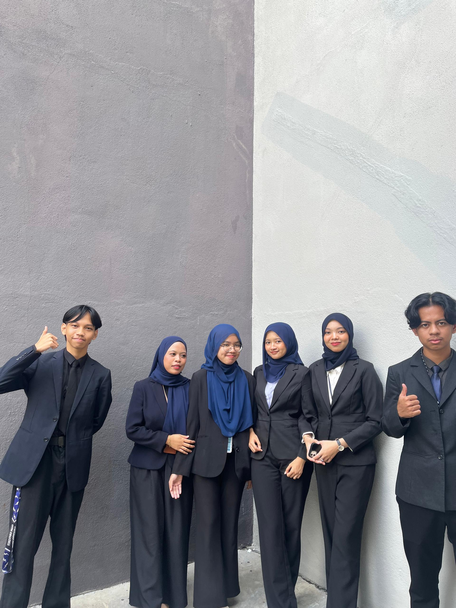
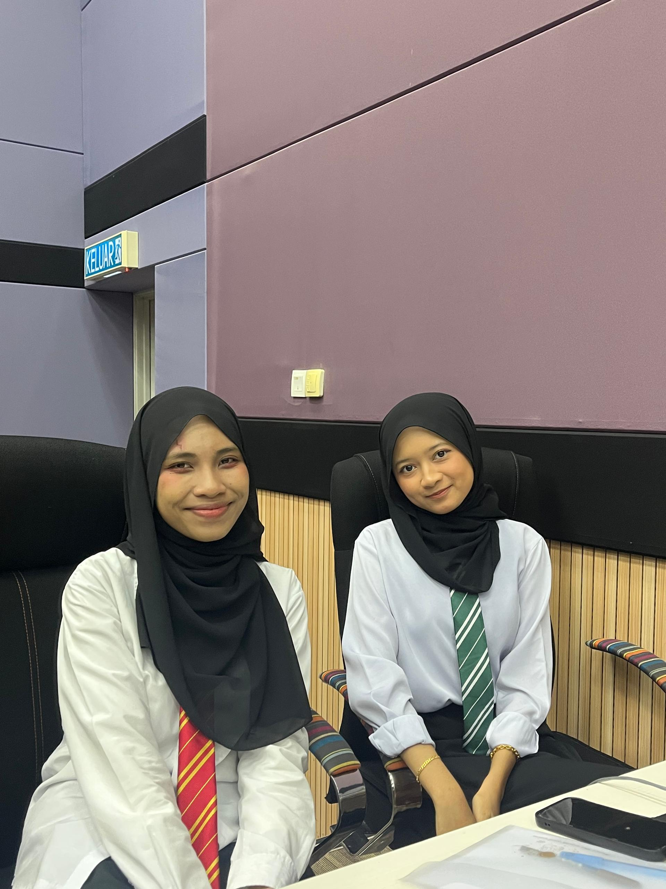
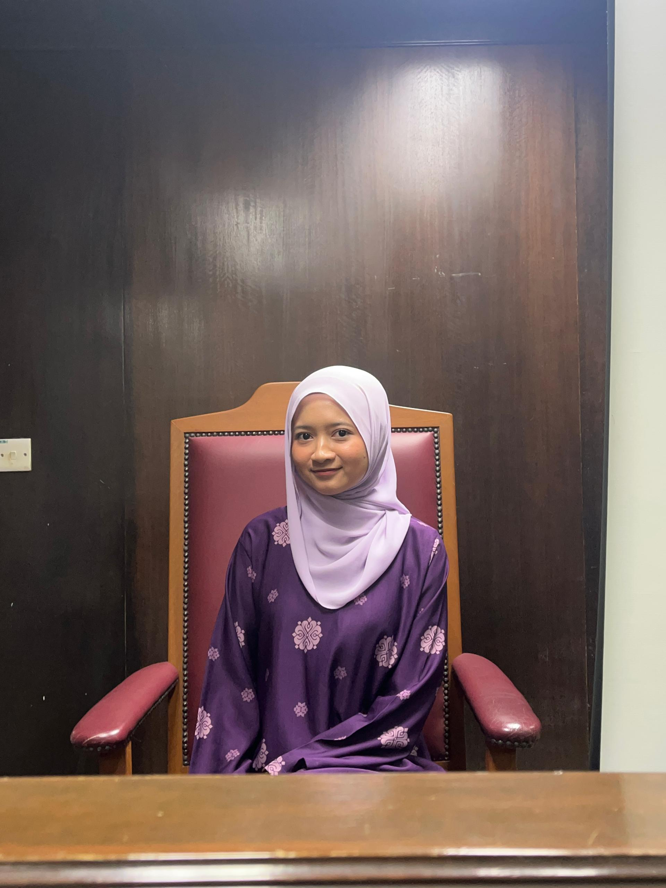

Diploma in Information Management
I am currently pursuing a Diploma in Information Management at Universiti Teknologi MARA (UiTM). This programme has exposed me to various aspects of managing information, records, databases, and digital systems in an organised and professional manner.

Key Academic Subjects
Throughout my studies, I have learned subjects such as Web Design and Development, Records Management, Database Management, Information Systems, and Digital Content Management, which strengthened both my technical and analytical skills.

Coursework & Assignments
Academic assignments trained me to conduct research, manage documents, prepare structured reports, and present information clearly. These tasks improved my critical thinking and time management skills.

Presentation & Communication
Group presentations and discussions enhanced my confidence in public speaking, teamwork, and effective communication, preparing me for professional environments.

Extracurricular Engagement
I actively participated in student clubs and societies, contributing to events, workshops, and competitions. These activities developed my leadership, collaboration, and organisational skills.

Awards & Achievements
I earned recognition through academic awards and participated in competitions such as digital projects and coding challenges, which strengthened my problem-solving and creative thinking abilities.
Academic Highlights
Beyond formal learning, my academic journey also involved creative exploration, collaboration, and continuous self-improvement.

Creative Projects
I participated in digital poster designs, website projects, and creative assignments that allowed me to combine technical knowledge with creativity.

Independent Learning
I consistently explored additional learning resources beyond the syllabus to strengthen my understanding and expand my digital skills.

Academic Discipline
Managing multiple assignments and deadlines helped me develop discipline, responsibility, and strong organisational skills.

Preparation for Career
My education prepared me with the mindset and skills needed to adapt to future professional challenges in information-related fields.